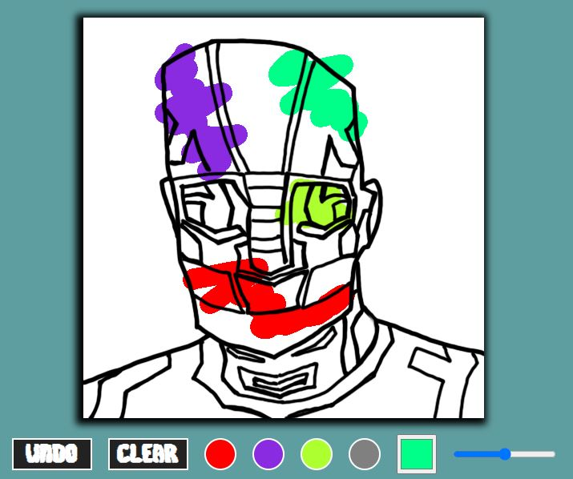
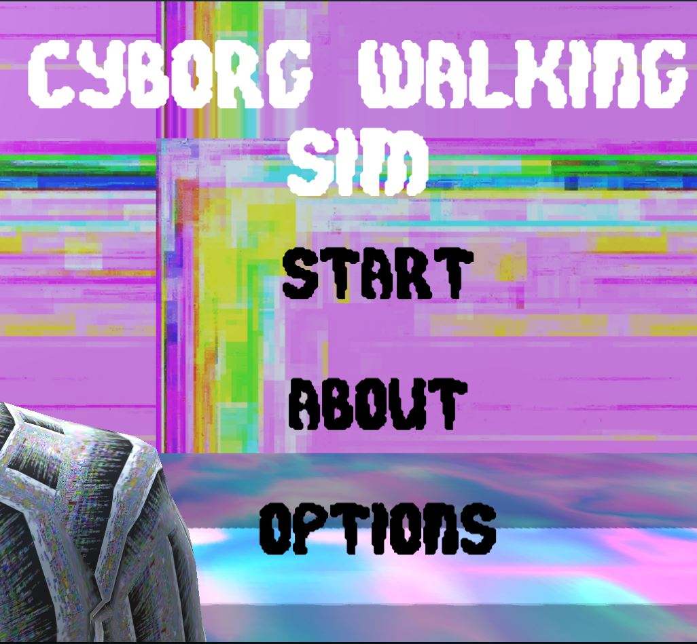
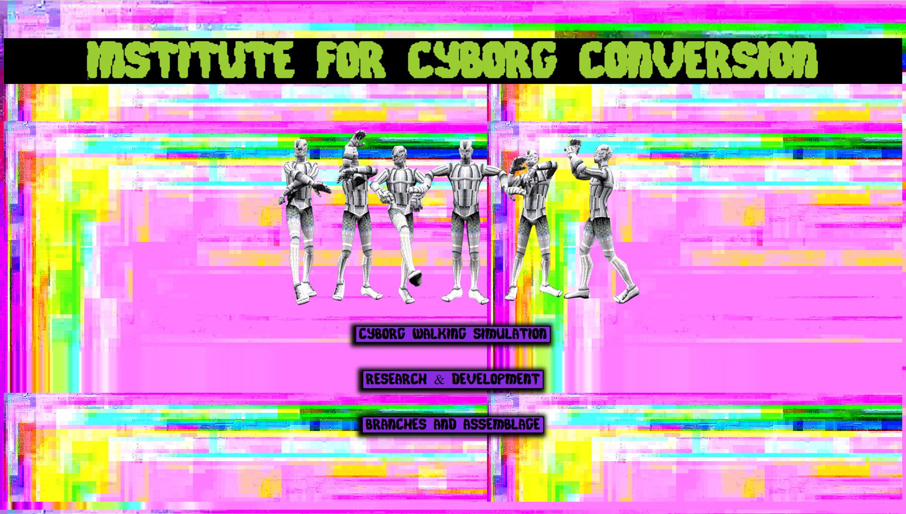

Institute for Cyborg Conversion
< Back
"Institute for Cyborg Conversion" is an immersive website exploring the potential of embodiment in the browser. The site is comprised of several 3D and 2D game experiences implemented in the browser using WebGl and Javascript.
Website Link:
digitalmedia.rmit.edu.au/~s3282504/


